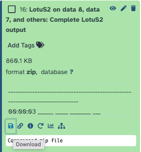

Identifying Mycorrhizal Fungi from ITS2 sequencing using LotuS2
| Author(s) |
|
| Editor(s) |
|
| Reviewers |
|
OverviewQuestions:
Objectives:
What is the fungal community composition in a given soil sample?
Requirements:
Understand the files needed for running LotuS2
Learn to use datasets from Zenodo in a Galaxy tool
Learn to upload data files to Galaxy
Learn to run the Galaxy LotuS2 tool and what the parameters mean
Understand the output files from LotuS2
Understand the structure of the mapping file needed by LotuS2 to link sample metadata to a pair of FASTQ files
Time estimation: 3 hoursSupporting Materials:Published: Sep 30, 2024Last modification: Sep 30, 2024License: Tutorial Content is licensed under Creative Commons Attribution 4.0 International License. The GTN Framework is licensed under MITpurl PURL: https://gxy.io/GTN:T00459rating Rating: 5.0 (0 recent ratings, 2 all time)version Revision: 2
Introduction
This tutorial is for you if you are a mycologist using metabarcoding data to understand the fungal composition of soil samples. In particular, this tutorial and its downstream applications will be of most interest to mycorrhizal scientists. Society for the Protection of Underground Networks (SPUN) is a research and advocacy organisation that uses Illumina sequencing of environmental environmental DNA (eDNA) from soil samples to identify mycorrhizal fungi. At SPUN, we use both Internal Transcribed Spacer 2 (ITS2) and Small Subunit (RNA) (SSU) amplicon sequencing to identify ectomycorrhizal and arbuscular mycorrhizal fungi, respectively. This tutorial focuses on the ITS2 sequencing used to identify Mycorrhizal fungi (MF).
We do this by using a specific primer pair that amplifies just the ITS2 region of the ribosomal DNA present in a soil sample. This tutorial covers data for an ITS2 amplicon produced using the ITS3F and ITS4R primer set and sequenced using Illumina sequencing, which generates paired-end data. In this case, the example data has been generated using a NextSeq 2000, using 2x300bp chemistry.
This tutorial concentrates on the bioinformatics part of the process, i.e. the steps we need to do after we get data back from the sequencer. Starting from some example FASTQ files, we demonstrate how to upload data, run LotuS2, and examine the output files. We end with a brief description of what we can do with these output files.
We use LotuS2 at SPUN because we have found that it performs best out of all the tools we tried for identifying MF from sequencing data. The LotuS2 publication also includes a benchmark where it outperformed most amplicon tools using default parameters (see Özkurt et al. 2022).
AgendaIn this tutorial, we will cover:
Pre-requisites for this tutorial
If you have never used Galaxy before, we highly recommend doing their interactive tour first (takes a few minutes). Or, if you have more time (1h 30 min recommended), you can do the Galaxy Basics for Everyone tutorial.
We recommend signing up for a user account at https://usegalaxy.eu. Although other UseGalaxy servers are available (see the first part of the Galaxy Basics tutorial), LotuS2 is currently fully functional only on this Galaxy server.
Hands-on: Launch galaxy
- Open your favorite browser (preferably Chrome/Chromium or Firefox. Internet Explorer/Edge and Safari sometimes have problems!)
- Browse to https://usegalaxy.eu
- We recommend keeping this tutorial open in a separate browser window side-by-side if you have space on your desktop. If you only have one screen, you can also launch tutorial mode on the UseGalaxy server.
Tools are frequently updated to new versions. Your Galaxy may have multiple versions of the same tool available. By default, you will be shown the latest version of the tool. This may NOT be the same tool used in the tutorial you are accessing. Furthermore, if you use a newer tool in one step, and try using an older tool in the next step… this may fail! To ensure you use the same tool versions of a given tutorial, use the Tutorial mode feature.
- Open your Galaxy server
- Click on the curriculum icon on the top menu, this will open the GTN inside Galaxy.
- Navigate to your tutorial
- Tool names in tutorials will be blue buttons that open the correct tool for you
- Note: this does not work for all tutorials (yet)
- You can click anywhere in the grey-ed out area outside of the tutorial box to return back to the Galaxy analytical interface
Warning: Not all browsers work!
- We’ve had some issues with Tutorial mode on Safari for Mac users.
- Try a different browser if you aren’t seeing the button.

Understanding the files needed for running LotuS2
At SPUN, we run LotuS2 to identify mycorrhizal fungi in a set of samples, using the following input files:
- DNA sequence files for each sample in gzipped FASTQ format from the Illumina MiSeq sequencer
- A mapping file in a tab-separated-values format which specifies which FASTQ files correspond to which samples. The file can also provide additional metadata for each sample, such as the primers used for each sample, the location where the sample was collected, and so on.
- A simple demultiplexer (sdm) file in text format which specifies how the sequence FASTQ files should be quality filtered and demultiplexed.
For this tutorial, we have already provided a few example files at https://zenodo.org/records/13710591. You can click on this link to see which files are available (there is no need to download them).
These files correspond to the three types of input files above, as shown:
- DNA sequence files:
- C_ITS2_S160_R1_001.fastq.gz
- C_ITS2_S160_R2_001.fastq.gz
- N5_ITS2_S140_R1_001.fastq.gz
- N5_ITS2_S140_R2_001.fastq.gz
- Pcov3_ITS2_S151_R1_001.fastq.gz
- Pcov3_ITS2_S151_R2_001.fastq.gz
- A mapping file:
- Colombia_ITS2_Mapping.tsv
- An sdm file
- sdm_miSeq_ITS.txt
For this tutorial, you do not need to download these files. Galaxy allows you to fetch data from a remote location directly into a tool or workflow without first downloading the files.
In the next section, we will get the data into Galaxy, and after that, we will look at the files to see what they look like.
Get Data
This section describes two options that will allow you to download and use SPUN’s example data files. Select one option and follow the instructions.
Hands-on: Option 1: Data upload - Add to history
Create a new history for this tutorial
To create a new history simply click the new-history icon at the top of the history panel:
Import the 6 sequencing read files, 1 mapping file, and 1 sdm parameters file from Zenodo by pasting the following URLs into the upload window under “Paste/Fetch Data”
https://zenodo.org/records/13710591/files/C_ITS2_S160_R1_001.fastq.gz https://zenodo.org/records/13710591/files/C_ITS2_S160_R2_001.fastq.gz https://zenodo.org/records/13710591/files/N5_ITS2_S140_R1_001.fastq.gz https://zenodo.org/records/13710591/files/N5_ITS2_S140_R2_001.fastq.gz https://zenodo.org/records/13710591/files/Pcov3_ITS2_S151_R1_001.fastq.gz https://zenodo.org/records/13710591/files/Pcov3_ITS2_S151_R2_001.fastq.gz https://zenodo.org/records/13710591/files/Colombia_ITS2_Mapping.tsv https://zenodo.org/records/13710591/files/sdm_miSeq_ITS.txt
- Copy the link location
Click galaxy-upload Upload Data at the top of the tool panel
- Select galaxy-wf-edit Paste/Fetch Data
Paste the link(s) into the text field
Press Start
- Close the window
- The history should be visible in a pane on the right of your window called ‘History’. Here, you can see the files and rename them.
- Rename galaxy-pencil the history to your name of choice. This should be something that helps you to remember the project, such as “SPUN Colombia 24”

Hands-on: Option 2: Data upload - Upload from your own computer
- This option will take more time, and should not be used if you have a slow internet connection.
- However, this option will most closely mimic how you will use this tool in your real analysis, i.e. showing you how to upload data from your own computer
- First, download all 8 files from Zenodo to your local computer. You can do this by scrolling down to the “Files” list section and clicking the “Download All” link at the top of this section. This will download a 55 {MB} zip file to your local computer
- Unzip the file - the folder should have 8 files in it.
- Create a new history in Galaxy
Upload these 8 files to the new history
- Click on Upload Data on the top of the left panel
- Click on Choose local file and select the files or drop the files in the Drop files here part
- Click on Start
- Click on Close
Examine the input files
We will briefly look at each type of file to see that it has been uploaded correctly. This doesn’t need to be done for every file each time you use LotuS2 if you have a large number of files, but it is good practice to check some files to see that they have been uploaded in the correct format.
Hands-on: Inspect the FASTQ file
- Click on the file name of one of the fastq.gz files in the history
- The filename should expand to show you some information such as the size of the file, and the type of the file
- Click on the galaxy-eye (eye) icon next to a fastq.gz file in the history
- You should see 4 lines for each sequence:
- A header beginning with
>followed by sequence identifiers- The DNA sequence of the read, made up of ATGCN
- A line with just
+on it (indicates that the next line has sequence quality values)- A line with sequence quality values for each nucleotide, in ASCII format
You do not need to know more about FASTQ files for this tutorial, or about sequence quality in ASCII format, but if you want to learn more, you can do the Sequence Analysis: Quality Control tutorial.
Hands-on: Inspect the mapping tab-separated-values (TSV) file
- Click on the galaxy-eye (eye) icon next to Colombia_ITS2_Mapping.tsv in your history
- Each row is a sample
- The columns tell you information about each sample:
- #SampleID is a short name/ID for the sample. Here, “C” stands for “Control” sample, and the other two are called samples “N5” and “Pcov3”
- fastqFile lists the sequence file names that correspond to each sample. We have two FASTQ files for paired-end sequencing: first, the forward file is listed, followed by a “,” (comma), and then the reverse file name is listed, with no spaces between these.
- ForwardPrimer: Lists the forward primer sequence used during PCR to produce the sequenced amplicon (ITS3 forward primer here).
- ReversePrimer: Lists the forward primer sequence used during PCR to produce the sequenced amplicon (ITS4 reverse primer here).
- The remaining columns (Latitude, Longitude, Country, Vegetation, etc) are metadata for each sample. LotuS2 does not need these columns, but it will copy them to the final R Phyloseq object that it creates. These columns will be needed for doing ecological analyses later. You can add metadata to the phyloseq object that is created through LotuS2 later in R, as long as the sample ID in your metadata sheet matches the sample ID in your mapping file.
Comment: Note
- In this case, the ForwardPrimer and ReversePrimer are the same across all samples. This is typical as we usually sequence the same region in all samples using the same primer pair.
- LotuS2 allows you to specify the primer set as a parameter, and if this is done, the primer sequence does not need to be written in the mapping file. In this case, we are including primer sequences in the mapping file. When using different primer sets, if you are following these instructions for your data, you may need to change the primer sequences to reflect the primer set used for your sequencing.
Hands-on: Inspect the sdm options file
- Click on the galaxy-eye (eye) icon next to sdm_miSeq_ITS.txt in your history
- This file specifies some of the parameters needed for processing ITS data with Illumina MiSeq paired-end sequencing using the software ‘SDM’ used by LotuS2. It can be also used for our files that were generated using an Illlumina NextSeq 2000.
- The sdm options file is not needed if you are using default sdm settings, because LotuS2 provides an internal default version of the file. But in this case, specific parameters are required for ITS sequencing, so we provide this file.
Question: Check your understanding of the inputs
- What is the reverse primer for sample “N5”?
- What is the DNA concentration in ng per µl for sample “Pcov3”?
- When LotuS2 processes ITS paired-end sequences using these inputs, what is the minimum sequence length (minSeqLength) it will consider, below which it will discard the sequence?
- Which of the 6 FASTQ files has the most data? (i.e., is the biggest in size?)
- In Colombia_ITS2_Mapping.tsv: TCCTCCGCTTATTGATATGC
- In Colombia_ITS2_Mapping.tsv, under column DNA_concentration_ng_ul: 20.4
- In sdm_miSeq_ITS.txt, next to minSeqLength: 110
- Click on the names of each of the fastq.gz files in the history. The biggest is N5_ITS2_S140_R2_001.fastq.gz: 19.0 MB
Create a “list of pairs” from the fastq.gz files
- This is a very important step when you first upload the data, because the LotuS2 tool needs our fastq.gz files in pairs.
- Galaxy has a very handy feature that automatically detects pairs of files from the filenames
Hands-on: Create pairs of fastq files
- Select ONLY the 6 fastq.gz files in your history (do not select
sdm_miSeq_ITS.txtandColombia_ITS2_Mapping.tsv)- Choose the “Build List of Dataset Pairs” option for these 6 files! Screenshot showing how to select 6 out of 8 items, and then click the top right dropdown to choose the “Build List of Dataset Pairs” option
- Galaxy will automatically pair the files for you on the next screen
- Rename the new collection as “Colombia ITS2 FASTQ pairs”
- By default these two options are checked: “Hide original elements” and “Remove file extensions”. You can leave them checked or unchecked. If you leave them checked, the 6 individual fastq.gz files will disappear from your history and be replaced by one collection with 3 pairs of FASTQ files with the new name “Colombia ITS2 FASTQ pairs”
- Click on galaxy-selector Select Items at the top of the history panel
- Check all the datasets in your history you would like to include
Click n of N selected and choose Build List of Dataset Pairs
- Change the text of unpaired forward to a common selector for the forward reads
- Change the text of unpaired reverse to a common selector for the reverse reads
- Click Pair these datasets for each valid forward and reverse pair.
- Enter a name for your collection
- Click Create List to build your collection
- Click on the checkmark icon at the top of your history again

{kind=link}
Run LotuS2
When we run the LotuS2 tool on our data, it runs many steps in the background:
- demultiplexing and filtering raw FASTQ sequences
- denoising, removing chimeric sequences and clustering sequences into very high quality Operating Taxonomic Unit (OTU)s/Amplicon Sequence Variant (ASV)s
- determining the taxonomic origin of each OTU using specialized and general-purpose databases and statistical algorithms
- constructing OTU, genus, family, class, order and phylum abundance tables in .txt or .biom format
- reconstructing the OTU phylogenetic tree
- generating phyloseq objects for downstream analysis
The figure below with an overview of LotuS2 is taken from Özkurt et al. 2022.
 Open image in new tab
Open image in new tabAs LotuS2 is a very powerful, general-purpose tool used in many metabarcoding projects for bacteria, fungi, and eukaryotes, it provides many different parameters (options for running the software) specified for each special use case.
In the next subsection, we show how to run LotuS2 in Galaxy and how to set the parameters needed for a fungal dataset.
Run LotuS2 with the example fungal dataset
Hands-on: Run LotuS2In the panel on the left, select “Tools”, search for “LotuS2” and then run the tool using the parameters below. Leave the rest of the parameters at their default settings.
Make sure you have the right version (2.32+galaxy0). You can check the version by clicking the tool-versions (blocks) icon.
- LotuS2 ( Galaxy version 2.32+galaxy0) with the following parameters:
- “Single- or Paired-end data?”:
Paired-end list
- In “List of paired reads”: choose the paired-list you created in the previous section:
Colombia ITS2 FASTQ pairs(or whatever name you gave to the collection)- In “Mapping file (optional)”:
Colombia_ITS2_mapping.tsv- Forward (and Reverse) Primer: Leave blank
- “Clustering algorithm”:
VSEARCH- “Taxonomy aligner for taxonomic profiling of OTUs”:
Lambda, LCA against custom reference database
- “Taxonomy reference database”:
Use a built-in taxonomy database
- “Using reference database”:
ITS fungi specific (UNITE)- In “Other Clustering Options”:
- “Minimum size of dereplicated raw reads (optional)”:
10:1,5:2,3:3- In “Other Taxonomy Options”:
- “Amplicon type”:
ITS2- “Tax group”:
fungal 18S/23S/ITS annotation- In “Other options”:
- “SDM option file”:
sdm_miSeq_ITS.txt- Once all the parameters above are entered, click the “Run Tool” button at the end.
- You should see a green box on the next page saying “Started tool LotuS2 and successfully added 1 job to the queue”. The box lists the 6 outputs that the tool produces.
- This step can take 5-10 minutes to run or longer depending on how many other jobs are running on the Galaxy server. While we are waiting for it to finish, you can do the next step on “Creating your own mapping.tsv” file
- You will know when the tool has finished because all the outputs in the history will turn green.
Comment: Notes
- Remember to choose Paired-end list in the sequencing read data section. Galaxy will pick up the Paired-end list available in the History, which will have the name you gave it in the Create a list of pairs step
- In “Forward (and Reverse) Primer”: Leave blank, as we have already provided them in the mapping.tsv file. If you are carrying out an analysis using your own data, you may add here the primer sequences used in your analyses instead of in the mapping file, if you prefer.
- In “Other Clustering Options”: “Minimum size of dereplicated raw reads (optional)”: we put
10:1,5:2,3:3. Each “X:Y” pair means “A unique dereplicated read must be seen at least X times in at least Y samples”. So, if a sequence read is only found in 1 sample, it must be present in 10 copies. If a sequence read is found in only 2 samples, it must be found in 5 copies in each, etc. This is a strict parameter, so that sequence errors are not taken as novel biological sequences, reducing the occurrences of false positive OTUs or ASVs. You may want to use more lenient values if you know your data has a high number of real singletons, i.e., sequences that occur only once.
Question: Examine the parameter options
- What other clustering algorithms can you use inside LotuS2?
- What other amplicon types can LotuS2 classify?
- In the “LotuS2” tool’s parameter page, under “Clustering Algorithms”, click on the drop down. You should see these tools:
- DADA2
- swarm
- CD-HIT
- VSEARCH
SPUN uses VSEARCH for our ITS2 amplicon for the identification of fungi from soils.
- In “Other Taxonomy Options”, click on the drop-down under “Amplicon type”:
- Default
- LSU
- SSU
- ITS
- ITS1
- ITS2
Here, we were using general fungal primers that amplify the ITS2 region. In another tutorial, we will see how to use the SSU region for specific amplification of arbuscular mycorrhizal fungi (AMF)
Examine the outputs
The LotuS2 Galaxy tool creates 6 output files that you should see in your history, with names like this (the exact number after each data might be different):
- LotuS2 on data 8, data 6, and others: main log file
- LotuS2 on data 8, data 6, and others: mapping file
- LotuS2 on data 8, data 6, and others: Newick-formatted phylogenetic trees between sequences
- LotuS2 on data 8, data 6, and others: FASTA-formatted extended OTU seed sequences
- LotuS2 on data 8, data 6, and others: OTU abundance matrix
- LotuS2 on data 8, data 6, and others: Complete LotuS2 output
Hands-on: Examine outputsClick on the little galaxy-eye (eye) icon next to each output in the history to examine it. An explanation of each file is given below.
main log file: If we had run LotuS on the command line, the contents of the
output/LotuSLogS/LotuS_run.logwould be this main LotuS2 run log file.It has information on all the parameters passed to the tool, and information on the start time of each step in the program, plus the output of each step.
You should always check this file first to see if LotuS2 completed correctly, and approximately how many reads were used/classified. If this number is much lower than what you expected, that might indicate a problem with the run and the parameters.
mapping file: You can ignore this file as it is a repeat of the mapping TSV file (tab-separated-values) that we used as an input.
Newick-formatted phylogenetic trees between sequences: A phylogenetic tree created from the ITS2 sequences. If you want to see what the tree looks like, you can copy the contents of this file and paste it at this online tree viewertreeview/
FASTA-formatted extended OTU seed sequences: OTU sequences created by the LotuS2 program after clustering near-identical reads
OTU abundance matrix: A tabular file with rows and columns with tab-separated-values. Each row is an OTU. The first column has the OTU name, and the remaining columns have the OTU abundance (i.e. how many reads were seen for that OTU) in each sample
Complete LotuS2 output: If you try to view this file you will see some unreadable binary characters on the screen. That’s because this is a zip file with the complete LotuS2 output folder in one zip folder. You should download this zip file and unzip it on your local computer if you want to see everything inside this folder. 
One of the most useful files in this output folder is the
phyloseq.Rdatafile which you can load in R to do further ecological analysis. This is beyond the scope of the current tutorial, but we will cover this topic in future tutorials. If you want to get started on your own, you can look at the last part “Exploration with phyloseq” in the Building an amplicon sequence variant (ASV) table from 16S data using DADA2 tutorial.
{kind=link}
Question: Test your understanding of the outputsIf for some reason, your LotuS2 run did not complete, you can look at this example LotuS2 run that we generated using the steps above.
- How many total reads were in the OTU abundance matrix? (hint: main log file)
- What percentage of reads are assigned at the phylum level and at the genus level? (hint: main log file)
- How long did the entire LotuS2 pipeline take to run? (hint: the main log has time stamps at the left of each step in the format hh:mm:ss)
- Which OTU was most abundant in all samples? (hint: OTU abundance matrix). How many reads were present in each sample?
- What was the sequence of the least abundant OTU? (hint: FASTA-formatted extended OTU seed sequences)
For the first 3 questions, scroll to near the bottom of the “main log file”. Under “Calculating Taxonomic Abundance Tables” the answers in our example LotuS2 run were:
- Total reads in matrix: 132123
- Phylum 95%, Genus 65%
- 00:02:34 (i.e. 2 minutes 34 seconds)
- In the “OTU abundance matrix”, the OTUs are arranged in order of greatest-to-least abundance so OTU1 was the most abundant with 0 reads in sample C (Control), 25,659 reads in sample N5, and 0 reads in sample Pcov3
- In the “OTU abundance matrix”, the two least abundant sequences with 6 reads total each were OTU256 and OTU257. We can look up the sequences of these files in the “FASTA-formatted extended OTU seed sequences” at the bottom of the file:
>OTU256 GAAATGCGATACGTAATGCGAATTGCAGAACTCAGTGAATCATCAAATCTTTGAACGCAAATTGCGCTTTCGGGATAGGCCTGAAAGCACGTTTCTTTGAGTATCGATTCAACCAACGCTCGATTGCGTGCTTTTTATTTTTCAAAATAAAAGCTTGCATTCGGTTGTAATGAGTTTTCTTTCTCTTTGAAAGTGACTTGAAGAATCGACAGTGAATGAACGATTTTCAAATCGAAACATCTGTCGGCATAAGCAATGCGGTTAAACTATTGCGTTGTGAGCTGATAGGATGTAGGCGATGTAAGAAATCGTTGGATCTTGTAACTGTTCGCAAGTGACAAGAATGACAAAATTTGATTAAGATCTCAAATGAAGCGAGGATACCCGCCGAACTTAA >OTU257 GAAATGCGATAAGTAGTGTGAATTGCAGAATTCAGTGAATCATCGAATCTTTGAACGCAAATGGCGCTCCCTGGCATCCCGGGAAGCATGCCTGTTTGAGAACCGTAGATAGGCCAAGCTCACCAGGTTCCCCGTATCATCATCCAGCCCGGACGATGTTTACCACTCTGGTGGTGATGGGTCACTGGCGCTTTTTCGCTGCCCGTGACCTGCAACCTTTTGTCCCCGGAAGTCGACGGACCCGGATTCCCATGTCAGGTTGACACGGAGAGGGCATCACCCCCCAATCCGATGGTTTTCTGGGGAAAGACGCGGCCATCCTTCCCGGGGCGCCCCTTCAACaaaacaaaaaaaaacaaaaaaaaaCTTGGTCTCAAATCAGGCAAGAGAACCCGCTGAACTTAA
Run LotuS2 on your own data
To run the LotuS2 workflow on your own fungal data, you only need the sequencing FASTQ files and some information about what primers were used.
In the example dataset, we used the ITS3/ITS4 primer pair to sequence the ITS2 region, so our Forward primer was GCATCGATGAAGAACGCAGC and the Reverse primer was TCCTCCGCTTATTGATATGC
When you want to process your own sequencing files, you can specify the Forward and Reverse primer in the Galaxy LotuS2 Parameters directly in the options if all your samples have the same forward and reverse primers:
- “Forward primer used to amplify DNA region (optional) - optional”:
GCATCGATGAAGAACGCAGC - “Reverse primer used to amplify DNA region (optional) - optional”:
TCCTCCGCTTATTGATATGC
We advise adding metadata to the phyloseq object after running LotuS2, so that a large mapping file with all metadata does not have to be created. We will have future tutorials on adding metadata from a .csv file to a phyloseq object in R.
Create your own mapping tsv file
Mapping files for LotuS2 have to be in tab-separated-values format. You can create this file in any spreadsheet software, eg: Microsoft Excel or Google Sheets. The important thing to note is that when you save or export the file, you should select the TSV format (called “Tab separated values” in Google Sheets or “Tab-delimited text .txt” in Excel)
LotuS2 allows many columns in the mapping tsv file according to the specification. However, for simplicity, we recommend this format for sequencing data using the SPUN protocol:
- Only 1 header row that begins with
#SampleID - One row per sample
- The only essential columns are
#SampleID,fastqFile - If you have the same ForwardPrimer and ReversePrimer in all your samples, then you can provide them in the LotuS2 Galaxy tool and delete the ForwardPrimer and ReversePrimer columns
- If you have any additional metadata variables that you want to analyse downstream using R, then you can provide them as columns
- We recommend using “SequencingRun” and labelling with the name of the sequencing run, which is arbitrary. Something like “Scripps run 1”. This is because if samples were run across multiple different sequencing runs it is important for LotuS2 to factor this into analyses. If samples were all run on the same run, write the same for every sample.
- In the data files for this tutorial, and in most cases, the sequencing provider will separate the data from separate samples into separate pairs of files. This is known as demultiplexing. If all your samples are combined in one pair of files, then you will need to provide the demultiplexing barcodes in the mapping tsv file.
For more information, see the LotuS2 Mapping File Format Documentation
In the exercise below you will create your own mapping tsv file for a new run.
Hands-on: Create and use your own mapping tsv fileSteps:
Import history from the mapping example history
- Open the link to the shared history
- Click on the Import this history button on the top left
- Enter a title for the new history
- Click on Copy History
Create a table in your favourite spreadsheet software (eg Google Sheets or Microsoft Excel) with the following columns (you can copy and paste from the example below. We have filled in the first two columns for you #SampleID and fastqFile):
#SampleID fastqFile ForwardPrimer ReversePrimer Vegetation N11 N11_ITS2_S134_R1_001.fastq.gz,N11_ITS2_S134_R2_001.fastq.gz N16 N16_ITS2_S138_R1_001.fastq.gz,N16_ITS2_S138_R2_001.fastq.gz - Complete the table:
- Add the correct ForwardPrimer
GCATCGATGAAGAACGCAGCand the correct ReversePrimerTCCTCCGCTTATTGATATGCto each row- Add the Vegetation
Trigonobalanus excelsa forestto each rowExport or Save the spreadsheet as a new file in tab-separated-values format (Google Sheets: File: Download: Tab separated values (.tsv); Excel: File: Save as: choose Tab delimited text in the format)
Name the file something like “mapping.tsv” or “mapping.txt”
Upload this file to your history as a local file
- Click on Upload Data on the top of the left panel
- Click on Choose local file and select the files or drop the files in the Drop files here part
- Click on Start
- Click on Close
- Now you should have all the files you need in this new history to run LotuS2:
- 4 paired-end FASTQ files for 2 samples
- 1 mapping tsv file specifying sample IDs, fastqFiles, primers, and metadata for these 2 samples
- 1 sdm_miSeq_ITS.txt
Rerun LotuS2 following the steps above
- If your LotuS2 run finishes - then CONGRATULATIONS! You now know how to create your own mapping tsv file and run LotuS2 on a new set of fastq.gz files
Conclusion
- LotuS2 is a powerful tool that can be used to identify species present in a DNA sequencing sample
- You have learnt how to run LotuS2 on example data
- You have learnt how to create a mapping tsv file for a new set of data
You've Finished the Tutorial
Key points
LotuS is a metagenomics tool for identifying OTUs or ASVs from sequencing data
Galaxy is an easy way to run LotuS2 in the cloud for bioinformatics beginners
Frequently Asked Questions
Have questions about this tutorial? Check out the FAQ page for the Microbiome topic to see if your question is listed there. If not, please ask your question on the GTN Gitter Channel or the Galaxy Help ForumUseful literature
Further information, including links to documentation and original publications, regarding the tools, analysis techniques and the interpretation of results described in this tutorial can be found here.
References
- Özkurt, E., J. Fritscher, N. Soranzo, D. Y. K. Ng, R. P. Davey et al., 2022 LotuS2: an ultrafast and highly accurate tool for amplicon sequencing analysis. Microbiome 10: 10.1186/s40168-022-01365-1
Glossary
- AMF
- arbuscular mycorrhizal fungi
- ASV
- Amplicon Sequence Variant
- EcMF
- ectomycorrhizal fungi
- ITS2
- Internal Transcribed Spacer 2
- MF
- Mycorrhizal fungi
- OTU
- Operating Taxonomic Unit
- SPUN
- Society for the Protection of Underground Networks
- SSU
- Small Subunit (RNA)
- TSV
- tab-separated-values
- eDNA
- environmental DNA
- sdm
- simple demultiplexer
Feedback
Did you use this material as an instructor? Feel free to give us feedback on how it went.
Did you use this material as a learner or student? Click the form below to leave feedback.
Citing this Tutorial
- Sujai Kumar, Identifying Mycorrhizal Fungi from ITS2 sequencing using LotuS2 (Galaxy Training Materials). https://training.galaxyproject.org/training-material/topics/microbiome/tutorials/lotus2-identifying-fungi/tutorial.html Online; accessed TODAY
- Hiltemann, Saskia, Rasche, Helena et al., 2023 Galaxy Training: A Powerful Framework for Teaching! PLOS Computational Biology 10.1371/journal.pcbi.1010752
- Batut et al., 2018 Community-Driven Data Analysis Training for Biology Cell Systems 10.1016/j.cels.2018.05.012
@misc{microbiome-lotus2-identifying-fungi, author = "Sujai Kumar", title = "Identifying Mycorrhizal Fungi from ITS2 sequencing using LotuS2 (Galaxy Training Materials)", year = "", month = "", day = "", url = "\url{https://training.galaxyproject.org/training-material/topics/microbiome/tutorials/lotus2-identifying-fungi/tutorial.html}", note = "[Online; accessed TODAY]" } @article{Hiltemann_2023, doi = {10.1371/journal.pcbi.1010752}, url = {https://doi.org/10.1371%2Fjournal.pcbi.1010752}, year = 2023, month = {jan}, publisher = {Public Library of Science ({PLoS})}, volume = {19}, number = {1}, pages = {e1010752}, author = {Saskia Hiltemann and Helena Rasche and Simon Gladman and Hans-Rudolf Hotz and Delphine Larivi{\`{e}}re and Daniel Blankenberg and Pratik D. Jagtap and Thomas Wollmann and Anthony Bretaudeau and Nadia Gou{\'{e}} and Timothy J. Griffin and Coline Royaux and Yvan Le Bras and Subina Mehta and Anna Syme and Frederik Coppens and Bert Droesbeke and Nicola Soranzo and Wendi Bacon and Fotis Psomopoulos and Crist{\'{o}}bal Gallardo-Alba and John Davis and Melanie Christine Föll and Matthias Fahrner and Maria A. Doyle and Beatriz Serrano-Solano and Anne Claire Fouilloux and Peter van Heusden and Wolfgang Maier and Dave Clements and Florian Heyl and Björn Grüning and B{\'{e}}r{\'{e}}nice Batut and}, editor = {Francis Ouellette}, title = {Galaxy Training: A powerful framework for teaching!}, journal = {PLoS Comput Biol} }
Funding
These individuals or organisations provided funding support for the development of this resource
Congratulations on successfully completing this tutorial!You can use Ephemeris's
shed-tools installcommand to install the tools used in this tutorial.shed-tools install [-g GALAXY] [-a API_KEY] -t <(curl https://training.galaxyproject.org/training-material/api/topics/microbiome/tutorials/lotus2-identifying-fungi/tutorial.json | jq .admin_install_yaml -r)Alternatively you can copy and paste the following YAML
--- install_tool_dependencies: true install_repository_dependencies: true install_resolver_dependencies: true tools: - name: lotus2 owner: earlhaminst revisions: eb7baf1f72ca tool_panel_section_label: Metagenomic Analysis tool_shed_url: https://toolshed.g2.bx.psu.edu/